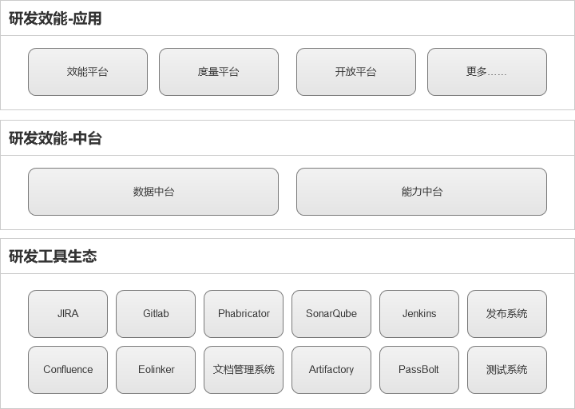
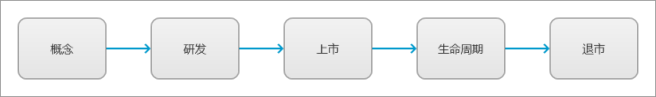
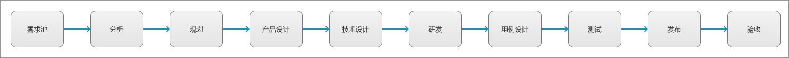
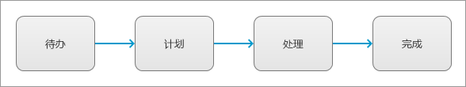
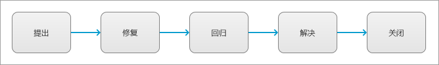
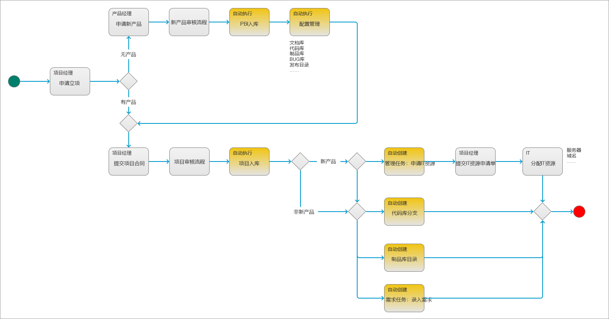
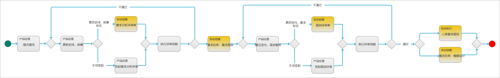
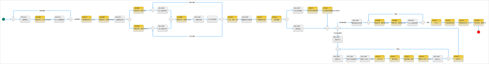
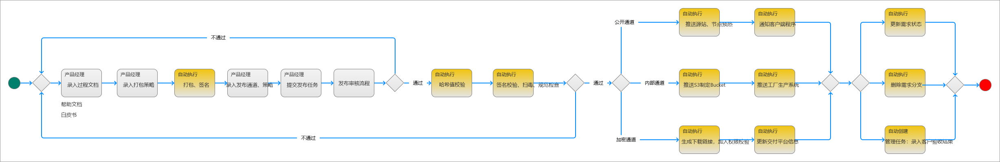
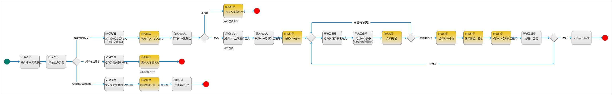

效能平台
概述
这篇文章，主要记录此前建设效能平台部分关键内容，我个人比较推崇这样的设计理念和方法。
平台目标
效能平台的目标，和研发效能的目标是一致的：
P0提升产品研发生产过程中，产品研发团队人员的效率P0提升产品研发生产整个过程的效率
设计思路
在从事研发工具建设之前，我从事了一段时间PaaS平台的规划和设计工作，当时PaaS平台的设计思路是：底层PaaS平台运行若干微服务，提供各种基础能力；基于PaaS平台的能力，在PaaS平台上搭建SaaS应用，用于解决实际业务需求场景。
在设计效能平台的时候，就借鉴了这个思路，如下图所示：

下面对这个设计思路进行简单地说明：
- 现有的研发工具生态作为底层服务，提供基础能力支持，每个工具都独立运行，可以独立使用
- 基于研发工具生态，搭建了数据中台和能力中台，聚合了底层研发工具的全部数据、接口能力
- 基于中台，可以使用底层研发工具生态的全部数据和能力，然后建设各种应用
- 效能平台：产品研发测试团队协同工作站
- 度量平台：经营质量风险分析度量应用
- 开放平台：不严格的开放平台，部分中台能力以Open-API的形式开放，支持业务线对接
本文主要介绍上图中：【研发效能-应用】层的效能平台相关内容。
对象设计

上图所示，为效能平台的关键对象，以及对象之间的关系。
从对象关系可以看出，整个效能平台的主线，是围绕产品研发过程中项目团队内部的协同来展开的。
流程设计
效能平台里的流程设计，几乎是对照研发流程设计来完成的，但是，为了提升效率和安全，在实际规划效能平台的流程时，制定了以下原则：
- 不需要人工处理的活动，由系统自动完成
- 人工可以处理、系统也可以处理的活动，由系统自动完成
- 系统要引导项目团队成员完成后续工作项，降低上手成本
基于上述原则，我们最终在效能平台里落地的流程，与研发流程设计中的流程规划存在部分出入，下面具体介绍一下效能平台里的流程设计。
对象生命周期
产品生命周期

在效能平台里，每个产品都会经历上图所示的几个生命周期阶段，其中：
- 只有全新产品的研发，该产品才会经历：概念、研发、上市
- 已有产品研发新版本，产品将一直处于：生命周期阶段
- 产品退市，产品下属的全部版本也都要退市
项目生命周期

项目生命周期，是参照了研发流程规划中对于产品开发流程的设计来制定的，几乎一致，只是在最后增加了“结项”，用于表示项目已经关闭。
需求生命周期

在效能平台里，项目开发团队要做的事情，都是以需求的形式来呈现，例如：优化系统性能，也会作为需求发起。
并且，需求会贯穿始终，即使到了最后打包发布环节，也是以需求我载体来完成。
任务生命周期

任务的生命周期比较简单，默认为待办，准备开始处理任务了，则进入“计划”阶段。
BUG生命周期

BUG在效能平台里实际的流转流程比较多，上图所示仅为主体的生命周期，实际在执行的时候，每个阶段都会对应子流程，例如：回归阶段，还对应BUG打回子流程。
评审单生命周期

在效能平台里，评审单的表决阶段，需要依据不同评审单类型和评审规则来判定表决结果。
协同流程
效能平台的协同流程，指的是项目研发团队各角色成员之间协同处理需求开发的流程。
在协同流程中，我们加入了很多自动化的流程，主要原因如下：
- 提升项目开发成员之间的协同效率
- 提升项目开发的效率
- 保证项目开发过程的安全性
- 协助落地项目研发流程和规范
下面将介绍具体的协同流程：
说明：流程图中，标记为
橙色的活动，是系统自动执行的活动。通过系统自动执行的活动，一方面可以帮助项目成员完成一些基础性的重复工作，另一方面还会通过自动创建任务的方式来引导项目成员开展后续工作项
立项阶段相关协同流程

上图所示，是效能平台中，产品、项目相关的协同流程。
上述流程中，最后一步，系统会自动创建需求任务，指派给产品经理，引导产品经理录入需求，同时开启项目的概念阶段。
需求收集分析阶段（概念阶段）相关协同流程

在上面的流程里，最后一步，系统会自动创建一个需求任务，指派给产品经理，引导产品经理执行概要设计活动，同时开启项目的设计阶段。
计划阶段相关的协同流程

在设计阶段，研发负责创创建了需求研发任务，并指派给具体研发工程师，该任务会遗留到下一阶段，用于提醒、引导研发工程师处理进行需求开发工作。
特别说明一下：技术方案入库时，需要录入可独立构建部署的组件设计方案，系统会基于此自动给这些组件创建代码库。
研发阶段相关的协同流程

在研发阶段的协同流程里，我们还是让研发工程师更多地关注需求以及需求本身相关的任务，一些非必要工作都由系统自动处理完成，例如：分支合并、编译构建、数字签名等。
研发阶段最后，系统会自动创建一个提测任务，引导研发负责人对需求进行提测，需求提测后，研发阶段结束。
验收阶段相关的协同流程

验收协同流程里有一点值得说明的是：当研发工程师接收BUG时，系统会自动创建BUG分支，修复BUG后，系统会自动合并分支，并执行代码扫描、编译构建、数字签名等活动。
在流程最后，系统会自动创建一个发布任务，指派给产品经理，引导产品经理来开展发布活动。
发布阶段相关的协同流程

在这个阶段，主要是完成升级包的打包和发布，根据配置的发布通道来执行不同的发布动作。
在最后，系统自动创建一个管理任务，引导产品经理验收需求发布结果，同时，需求进入到生命周期阶段。
生命周期相关的协同流程

生命周期阶段，主要指的是需求/迭代发布后，结项前的这一段时间，在这期间，需要收集客户/用户对于需求的反馈内容，如果发现有BUG，则需要评估BUG紧急程度，紧急BUG在当前迭代直接修复；不紧急BUG放到BUG库，随后续迭代修复即可。